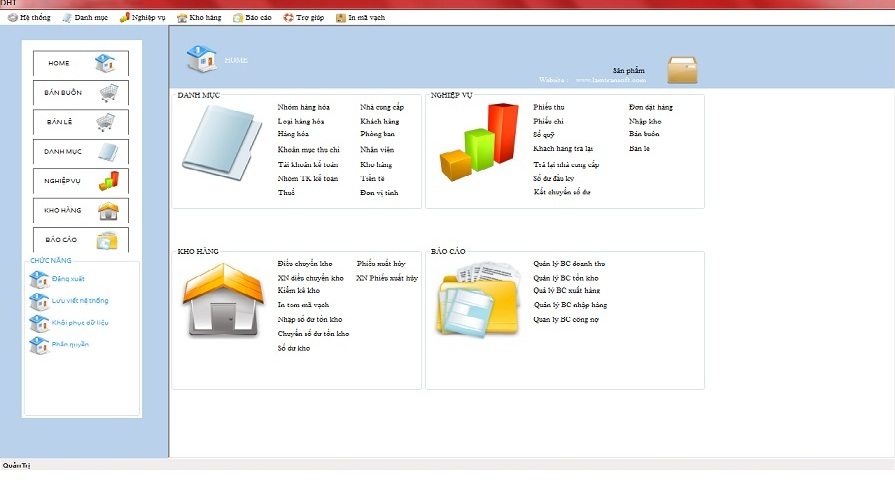
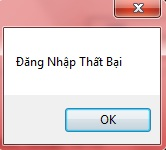

Bước 1: Vào hệ thống -> Đăng nhập lại hệ thống

Bước 2: Nhập tên truy cập vào ô [ Tên tài khoản]
Bước 3: Nhập mật khẩu đi kèm với tên truy cập vào ô [Mật khẩu]
Bước 4: Đúp chuột vào [Đăng nhập]
Nếu tên người dùng tồn tại và mật khẩu đi kèm đúng thì hệ thống sẽ hiển thị giao diện chính của chương trình

Nếu bạn nhập tên truy cập và mật khẩu không đúng thì sẽ có cảnh báo sau
